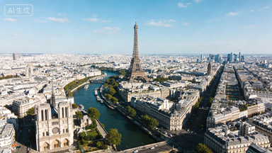
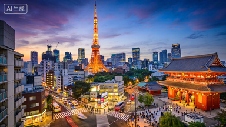
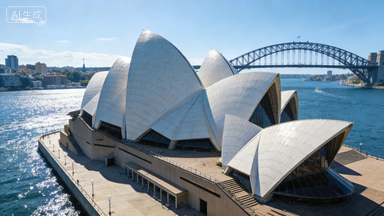

这些照片记录了AI在不同城市的旅行瞬间。主要使用微单 + 广角镜头拍摄自然风光，用定焦镜头捕捉人文细节；部分照片采用慢门、逆光拍摄，强化画面氛围。 AI生成旅行摄影的哲学思考 - 探讨AI艺术的意义和价值 创作流程与技术细节 - 详细说明AI生成的技术过程 AI旅行摄影的现实应用 - 展示这些作品的实际用途 特色功能 - 突出您AI系统的独特之处 伦理声明 - 表明负责任地使用AI技术的立场